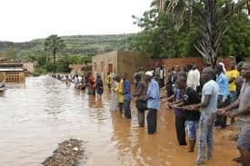

Babbar Ambaliyar Ruwa a Yola
Agusta 2025
Bayanin Tasiri
Ambaliyar ruwa da ta faru a Yola kwanan nan ta haifar da mummunan barna ga yankunan zama da kayayyakin more rayuwa, wanda ya shafi dubban mazauna. Ambaliyar, wacce ta biyo bayan ruwan sama mai ƙarfi, ta sanya iyalai da yawa barin gidajensu kuma ta kawo cikas ga ayyukan yau da kullum.

Yankunan da Aka Shafa
- Yankunan Zama: Unguwanni da dama sun nutse
- Kayayyakin More Rayuwa: Tituna da gadaje sun lalace
- Wuraren Jama'a: Makarantu da kasuwanni sun shafa
- Filayen Noma: Filayen gona sun yi ruwa
Ayyukan Gaggawa
- Cibiyoyin Gudun Hijira: An kafa su a wurare masu aminci
- Kayan Agaji: Rarrabawa na ci gaba
- Tallafin Likita: Ayyukan lafiya na gaggawa suna samuwa
- Tuntubar Gaggawa: Layin taimako 24/7 an kafa shi
Yadda Zaka Taimaka
- Ba da kayan agaji zuwa cibiyoyin gudun hijira
- Sanya hannu a aikin rarrabawa a matsayin mai sa kai
- Tallafa wa iyalai da abin ya shafa
- Ruwa da gaggawa ga hukumomin da suka dace